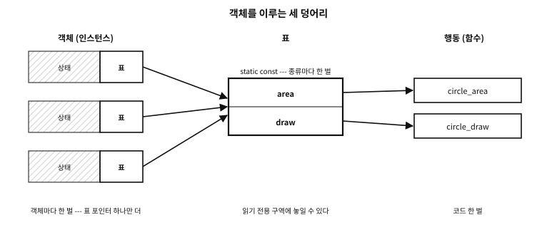

70 C 로 하는 객체 지향 — 흉내의 기술과 그 한계
먼저 알아야 할 것
_Generic돌아보기
68장에서 구조체의 첫 멤버에 함수 포인터 표를 가리키는 포인터를 두면 다형성을 얻는다고 했고, GTK 가 그 방식으로 거대한 객체 체계를 지었다고 했다. 그렇다면 C 로도 객체 지향 프로그래밍을 할 수 있는 것인가?
답. 흉내 낼 수 있다. 객체 지향 언어가 문법과 컴파일러로 해 주는 일 — 캡슐화, 다형성, 상속, 생성과 소멸 — 을 C 에서는 규약과 손으로 한다. 흉내는 쓸모가 있고, 리눅스 커널과 GTK 와 수많은 라이브러리가 그 쓸모를 증명한다. 그러나 흉내에는 분명한 한계가 있다. 컴파일러가 지켜 주지 않는 약속은 결국 어디선가 깨진다. 이 장은 흉내를 잘 내는 법과, 그 한계를 정직하게 보는 법을 함께 다룬다.
이 장의 필요성과 맥락
이 장이 끝나면
이 장에서 답할 질문
- 그렇다면 객체 지향은 느리니 쓰지 말라는 말인가?
70.1 객체 지향이란 무엇인가 — 원론#
먼저 낱말을 가른다. 이 책은 36장에서 C 의 객체를 「값을 담는 기억의 한 구역」이라 했다. int 하나도 C 의 객체다. 객체 지향 프로그래밍(object-oriented programming, OOP)의 객체는 다른 낱말이다 — 상태와 그 상태를 다루는 행동을 한 단위로 묶은 것을 말한다. 이 장에서 「객체」는 뒤의 뜻이다.
객체 지향을 설명할 때 흔히 넷을 꼽는다.
| 낱말 | 뜻 | 무엇을 위한 것인가 |
|---|---|---|
| 캡슐화(encapsulation) | 객체의 상태는 그 객체의 행동을 거쳐서만 바뀐다 | 불변식을 한 곳에서 지킨다 |
| 다형성(polymorphism) | 같은 요청에 객체의 종류마다 다른 행동이 답한다 | 부르는 쪽이 종류를 몰라도 된다 |
| 상속(inheritance) | 한 종류가 다른 종류의 상태와 행동을 물려받는다 | 공통 부분을 한 번만 쓴다 |
| 추상화(abstraction) | 바깥에는 무엇을 하는지만, 어떻게 하는지는 감춘다 | 바꿀 수 있는 자리를 만든다 |
표 70.1 — 객체 지향을 설명하는 네 낱말
이 넷은 처음부터 한 묶음이 아니었다.
객체 지향의 첫 언어로 꼽히는 Simula 67 은 노르웨이 컴퓨팅 센터의 Ole-Johan Dahl 과 Kristen Nygaard 가 모의실험(simulation)을 위해 만들었다. 배와 항구와 화물처럼 모의할 대상마다 「클래스」를 두고, 비슷한 대상은 클래스를 물려받게 했다. 클래스와 상속이 이 계보에서 나왔다.
다른 계보는 Alan Kay 와 Xerox PARC 의 Smalltalk 다. Kay 는 「객체 지향」이라는 말을 만든 사람으로 꼽힌다. 그가 그린 객체는 생물의 세포, 또는 네트워크의 컴퓨터처럼 메시지로만 서로 통하는 단위였다. 상속은 그의 그림에서 중심이 아니었다 — 이 이야기는 장의 끝에서 다시 한다.
오늘 「객체 지향」이라는 말은 주로 C++·Java·C# 의 모양, 곧 클래스·상속·가상 함수를 가리킨다. 이 장도 그 모양을 C 로 흉내 내는 법을 다루지만, 그것이 객체 지향의 유일한 모양은 아니라는 것을 기억해 둔다.
70.2 C 에는 없다 — 흉내다#
C23 에는 클래스도, 메서드도, 상속도, 접근 제어도, 생성자도, 소멸자도 없다. 있는 것은 구조체와 함수와 함수 포인터와 헤더 파일이다. 그것들로 객체 지향 언어의 부품을 하나씩 흉내 낸다.
| 언어가 해 주는 것 | C 의 흉내 | 누가 그 약속을 지키는가 |
|---|---|---|
| 캡슐화, 접근 제어 | 불투명 타입 — 헤더에 선언만 두고 정의는 .c 에(61장) | 컴파일러가 일부 지킨다(크기와 멤버를 모르게 한다) |
메서드와 this | 객체 포인터를 첫 인자로 받는 함수 | 사람 |
| 가상 함수, 다형성 | 함수 포인터 표(68장) | 사람 — 표를 잘못 채워도 컴파일러는 모른다 |
| 상속 | 기반 구조체를 첫 멤버로, 또는 container_of(48장) | 사람 — 하향 캐스트가 맞는지 아무도 검사하지 않는다 |
| 생성자 | 팩토리 함수 …_new, 초기화 함수 …_init | 사람 — 부르지 않으면 쓰레기 값의 객체 |
| 소멸자, RAII | …_free·…_fini 를 직접 부른다 | 사람 — 잊으면 누수 |
| 이름 공간 | 접두어(64장) | 사람 |
| 오버로딩 | _Generic(67장), 또는 다른 이름 | 컴파일러(_Generic 의 갈래 선택) |
표 70.2 — 객체 지향 언어가 해 주는 것과 C 에서 손으로 하는 것
오른쪽 칸을 보라. 대부분이 「사람」이다.
70.2.1 「잘하면 된다」를 경계한다#
흉내를 변호하는 흔한 말이 있다 — 「C 로도 다 할 수 있다. 프로그래머가 잘하면 된다.」 반은 맞다. C 로도 다 할 수 있다. 그러나 「잘하면 된다」는 설계가 아니다. 그것은 「이 약속이 깨지면 프로그래머의 탓」이라고 미리 적어 두는 것일 뿐이다.
언어가 해 주는 일을 손으로 한다는 것은, 그 일이 매번 옳아야 한다는 뜻이다. 표를 채울 때마다, 형 변환을 할 때마다, 객체를 만들고 지울 때마다. 천 번에 한 번 틀리면 천 개의 객체가 있는 프로그램에서는 늘 틀려 있다. 그리고 이 책이 57장에서 본 사고들은 모두 「잘하는」 사람들이 쓴 코드에서 났다.
그래서 이 장의 태도는 이렇다. 규약은 사람이 아니라 구조가 지키게 만든다. 불투명 타입은 바깥 코드가 멤버를 건드리는 것을 컴파일러가 막게 한다. 검사하는 형 변환 매크로는 틀린 하향 캐스트를 실행 때라도 잡는다. 그리고 도구가 잡을 수 있는 것은 도구에 맡긴다.
examples/oop/bad_call/shapes.c
/* 손으로 만든 「메서드 표」를 아무렇게나 채웠다: circle_area 는 원을 받는데,
표의 칸은 도형을 받는 함수를 기대한다. 캐스트가 컴파일러를 조용하게 만들었고,
그것으로 부르는 것은 정의되지 않은 동작이다(C23 6.3.2.3p8). */
#include <stdio.h>
struct shape;
struct shape_ops { double (*area)(const struct shape *); };
struct shape { const struct shape_ops *ops; };
struct circle { struct shape base; double r; };
static double circle_area(const struct circle *c) { return 3.0 * c->r * c->r; }
static const struct shape_ops circle_ops = {
/* 캐스트가 어긋남을 감춘다 */
.area = (double (*)(const struct shape *))circle_area,
};
int main(void)
{
struct circle c = { .base.ops = &circle_ops, .r = 2.0 };
struct shape *s = &c.base;
/* 이 기계에서는 「된다」 --- 그래도 틀렸다 */
printf("area = %g\n", s->ops->area(s));
return 0;
}
실행 결과
plain build : area = 12
(gcc has no -fsanitize=function; using clang for the second build)
checked build : stopped
call to function circle_area through pointer to incorrect function type 'double (*)(const struct shape *)'
표의 칸에 타입이 다른 함수를 형 변환으로 밀어 넣었다. 이 기계에서는 「맞는」 넓이가 나온다 — 그래서 더 위험하다. 호환되지 않는 타입의 함수를 포인터로 부르는 것은 정의되지 않은 동작, 곧 UB(undefined behaviour)다(C23 6.3.2.3p8). Clang 의 -fsanitize=function 은 간접 호출마다 함수의 타입을 확인해 이 자리에서 멈춘다. GCC 에는 이 검사가 없다.
플랫폼 노트. -fsanitize=function
흔한 오해. “C 로 짠 객체 체계는 C++ 와 같은 일을 한다. 단지 손이 더 갈 뿐이다”
dynamic_cast), 생성자를 건너뛴 객체가 없는지를 검사한다. C 의 흉내에서는 그 검사들이 사라지거나, 실행 때의 검사로 바뀌거나, 시험 도구의 몫이 된다. 「손이 더 간다」가 아니라 「틀렸을 때 알려 주는 것이 적다」가 정확한 차이다.70.3 세 덩어리를 가른다 — 상태, 행동, 표#
C 로 객체를 지을 때 가장 먼저 세울 원칙은 셋을 서로 가르는 것이다.
| 덩어리 | C 의 모양 | 몇 벌인가 |
|---|---|---|
| 상태 — 멤버 변수 | 인스턴스 구조체 | 객체마다 한 벌 |
| 행동 — 메서드 | 함수(static 또는 접두어를 단 바깥 함수) | 코드 한 벌 |
| 표 — 가상 함수 표 | 함수 포인터만 든 static const 구조체 | 종류마다 한 벌 |
표 70.3 — 객체를 이루는 세 덩어리
68장의 vtable.c 가 이 모양이었다. 객체는 표를 가리키는 포인터 하나만 갖는다.

그림 70.1 — 상태는 객체마다, 표는 종류마다 한 벌, 행동은 코드 한 벌.
세 가지 까닭이 있다.
- 크기. 함수 포인터를 객체마다 복사해 두면 메서드 다섯 개짜리 객체가 40바이트 커진다. 객체 백만 개면 40 MB 다. 표를 가르면 객체마다 8바이트다.
- 한 곳에서 바꾼다. 종류의 행동을 바꾸려면 표 하나를 고친다. 객체마다 함수 포인터를 들고 있으면, 어느 객체가 옛 함수를 들고 있는지 알 수 없다.
- 보안. 쓸 수 있는 기억에 놓인 함수 포인터는 공격의 표적이다 — 버퍼 하나가 넘쳐 그 포인터를 덮으면 프로그램의 흐름이 넘어간다(57장). 표를
static const로 두면 컴파일러와 링커가 그것을 읽기 전용 구역에 놓을 수 있다. 표준이 그렇게 놓으라고 정하지는 않지만, 흔한 구현은 그렇게 한다. 객체 안에 남는 것은 표를 가리키는 포인터 하나뿐이다.
리눅스 커널 개발자 Neil Brown 은 커널의 객체 지향 패턴을 정리하면서, 함수 포인터만 든 「순수한 표」를 기본으로 두고 표에는 함수 포인터 말고 다른 것을 거의 넣지 않는다고 적었다. 예외는 모듈 소유자나 이름처럼 그 구현을 등록하는 데 필요한 필드뿐이다.1
70.3.1 표의 빈칸#
표의 칸을 비워 두는(NULL) 것은 흔한 관례다 — 「이 종류는 이 행동을 따로 정하지 않는다」. 그러면 부르는 쪽은 매번 if (ops->flush) ops->flush(obj); 처럼 확인해야 한다. Brown 의 글은 이 관례의 값을 지적하고, 기본 행동을 명시적으로 채우는 쪽이 더 깔끔한 경우가 많다고 했다. C99 의 지정 초기자로 「기본값 묶음」을 매크로로 두고, 종류마다 다른 칸만 덮어쓰는 방식이다. 빈칸이 없으면 부르는 쪽의 확인도, 확인을 잊은 사고도 없다.
70.4 다형성 — 얻는 것, 치르는 것, 경계할 것#
표를 거쳐 함수를 부르는 것을 동적 디스패치(dynamic dispatch)라 한다. 어느 함수가 불릴지가 실행 때 객체의 표로 정해진다.
얻는 것은 분명하다.
- 부르는 쪽이 객체의 종류를 몰라도 된다. 도형을 그리는 코드는 원인지 사각형인지 묻지 않는다.
- 새 종류를 더할 때 부르는 쪽 코드를 고치지 않는다. 새 표 하나와 함수 몇 개를 더하면 된다. 플러그인 구조, 파일 시스템, 장치 드라이버가 이 성질 위에 서 있다.
치르는 것도 분명하다.
- 간접 호출. 컴파일러는 어느 함수가 불릴지 모르므로 그 함수를 호출하는 자리에 펼쳐 넣을(인라인) 수 없다. 인라인이 막히면 그 뒤의 최적화 — 상수 전파, 벡터화, 불필요한 계산 지우기 — 도 함께 막힌다. 호출 자체의 비용보다 이쪽이 크다.
- 읽기의 비용.
s->ops->area(s)를 읽는 사람은 그 줄이 무엇을 하는지 알 수 없다. 표를 채운 자리를 찾아가야 한다. - 표를 잊은 객체. 표 포인터를 채우지 않은 객체를 부르면 아무 자리로나 뛴다.
컴파일러는 어느 표인지 알 수 있는 자리에서는 간접 호출을 직접 호출로 바꾸기도 한다(탈가상화, devirtualisation). C 에서는 표가 static const 이고 객체의 표 포인터가 한 곳에서만 정해질 때 그럴 여지가 생긴다. 그러나 그것에 기대어 설계하지는 않는다.
경계할 것은 셋이다.
- 종류가 닫혀 있으면 표가 필요 없다. 도형이 원·사각형·삼각형으로 끝이라면, 태그 하나와
switch가 더 단순하고 대개 더 빠르다(아래 「요즘의 흐름」). 표는 종류가 열려 있을 때 — 바깥 사람이 새 종류를 더할 때 — 쓸모가 있다. - 파생이 기반의 약속을 깨지 않게 한다. 「정사각형은 직사각형의 일종이니 직사각형 표를 물려받는다」고 했는데, 직사각형의 「너비만 바꾸기」를 정사각형이 지킬 수 없다면, 직사각형을 받는 코드는 정사각형을 만나 틀린다. Barbara Liskov 가 1987년 OOPSLA 기조연설에서 내놓은 이 생각은 뒤에 「리스코프 치환 원칙」이라는 이름으로 불리게 되었다. C 에서는 그것을 문서와 시험으로만 지킨다.
- 표의 칸은 한 번 내놓으면 계약이다. 칸의 순서와 인자를 바꾸면, 옛 표를 채운 모든 바깥 코드가 틀린다(아래 「판이 바뀌어도 살아남는 구조체」).
70.5 오버로딩 — 이름 하나에 몸 여럿#
먼저 두 낱말을 바로 세운다. 자주 섞여 쓰이기 때문이다.
| 낱말 | 뜻 | 언제 고르는가 |
|---|---|---|
| 오버로딩(overloading) | 같은 이름의 함수가 인자 타입에 따라 여럿 있다 | 컴파일 때 — 인자의 타입을 보고 |
| 재정의(overriding) | 파생 종류가 기반 종류의 같은 행동을 자기 것으로 바꾼다 | 실행 때 — 객체의 표를 보고(다형성) |
표 70.4 — 오버로딩과 재정의는 다른 것이다
C 로 객체를 지을 때 「어떤 함수를 표에 넣고 어떤 함수를 넣지 않는가」는 재정의의 문제다. 그리고 「같은 이름으로 타입마다 다른 몸을 둘 것인가」는 오버로딩의 문제다. 둘을 따로 정한다.
70.5.1 표에 넣을 함수와 넣지 않을 함수#
종류마다 달라지는 행동만 표에 넣는다. 나머지는 평범한 함수로 둔다.
- 도형의
area는 원과 사각형에서 다르다 → 표. - 도형의
move(dx, dy)는 모든 도형에서 「위치에 더하기」다 → 평범한 함수shape_move. - 객체의 이름을 돌려주는
shape_name은 기반 구조체의 필드를 읽을 뿐이다 → 평범한 함수.
평범한 함수는 직접 호출되고, 인라인되고, 디버거에서 한 번에 찾아간다. 「혹시 나중에 바꿀지도 모르니」 모든 함수를 표에 넣으면, 위의 「치르는 것」을 모든 호출에서 치른다. C++ 가 함수를 기본으로 비가상으로 두고 virtual 을 따로 적게 한 것도 같은 판단이다.
70.5.2 C 에서 오버로딩을 하는 두 길#
C 에는 이름이 같은 함수를 둘 둘 수 없다. 길은 둘이다.
첫째, 이름을 나눈다. 표준 라이브러리 자신이 이 길을 택했다 — sqrtf·sqrt·sqrtl, abs·labs·llabs. 이름에 타입이 드러나므로 읽는 사람이 무엇이 불리는지 알고, 검색과 링크에서도 헷갈리지 않는다.
둘째, _Generic 으로 고른다(67장). C11 이 들인 _Generic 은 식의 타입에 따라 갈래를 고르는 컴파일 시간의 장치다. <tgmath.h> 의 sqrt(x) 는 x 의 타입을 보고 sqrtf 나 sqrtl 로 간다 — 이 헤더는 C99 부터 있었고 _Generic 보다 먼저지만, 오늘의 구현은 대개 _Generic 으로 짓는다.
70.5.3 _Generic 의 장단점과 경계할 것#
_Generic 은 편하지만, 그것이 보는 타입은 사람이 생각한 타입과 다를 때가 있다.
examples/oop/generic_pick.c
/* C 의 오버로딩: _Generic 은 식의 타입으로 갈래를 고른다 --- 컴파일 때.
그것이 보는 타입이 늘 사람이 생각한 타입은 아니다. */
#include <stdint.h>
#include <stdio.h>
#define type_name(x) _Generic((x), \
char: "char", signed char: "signed char", unsigned char: "unsigned char", \
short: "short", unsigned short: "unsigned short", \
int: "int", unsigned: "unsigned", long: "long", unsigned long: "unsigned long", \
long long: "long long", unsigned long long: "unsigned long long", \
float: "float", double: "double", long double: "long double", \
char *: "char *", const char *: "const char *", int *: "int *", \
default: "(something else)")
/* 타입으로 오버로딩한 「print」 --- 모든 갈래가 호출마다 컴파일되어야 한다 */
static void print_int(long long v) { printf("%lld", v); }
static void print_uint(unsigned long long v) { printf("%llu", v); }
static void print_dbl(double v) { printf("%g", v); }
static void print_str(const char *s) { printf("\"%s\"", s); }
#define print(x) _Generic((x), \
int: print_int, long: print_int, long long: print_int, \
unsigned: print_uint, unsigned long: print_uint, unsigned long long: print_uint, \
float: print_dbl, double: print_dbl, \
char *: print_str, const char *: print_str)(x)
int main(void)
{
char c = 'a';
uint8_t byte = 200;
const int ci = 5;
int arr[3] = { 0 };
/* C 에서 문자 상수는 int 다 */
printf("%-16s -> %s\n", "'a'", type_name('a'));
printf("%-16s -> %s\n", "c (a char)", type_name(c));
printf("%-16s -> %s\n", "c + 1", type_name(c + 1)); /* 승격된다 */
printf("%-16s -> %s\n", "byte", type_name(byte)); /* uint8_t 는 typedef 다 */
printf("%-16s -> %s\n", "ci (const)", type_name(ci)); /* 한정자가 떨어진다 */
printf("%-16s -> %s\n", "arr", type_name(arr)); /* 배열이 무너진다 */
/* const char * 가 아니라 char * */
printf("%-16s -> %s\n", "\"text\"", type_name("text"));
printf("%-16s -> %s\n", "1.0f * 2", type_name(1.0f * 2));
printf("\nprint: ");
print(42); printf(", "); print(3u); printf(", ");
print(2.5); printf(", "); print("hi");
printf("\n");
/* print(c) 는 컴파일되지 않는다: char 갈래가 없다. 빠진 갈래가 오류라는 것은
좋은 소식이고, `c + 1` 이 조용히 int 갈래로 간다는 것은 나쁜 소식이다. */
return 0;
}
실행 결과
'a' -> int
c (a char) -> char
c + 1 -> int
byte -> unsigned char
ci (const) -> int
arr -> int *
"text" -> char *
1.0f * 2 -> float
print: 42, 3, 2.5, "hi"
- 문자 상수
'a'는 C 에서int다(C++ 와 다르다). c + 1은 정수 승격으로int가 된다(30장).uint8_t는typedef일 뿐이라 이 기계에서는unsigned char갈래로 간다 — 다른 구현에서는 다른 갈래일 수 있다.const int는int갈래로 간다. 고르는 식은 좌변값 변환을 거쳐 한정자를 잃는다.- 배열은 포인터로 무너진다. 문자열 리터럴은
const char *가 아니라char *다.
그리고 print(c) 는 컴파일되지 않는다 — char 갈래가 없기 때문이다. 빠진 갈래가 오류라는 것은 좋은 소식이고, c + 1 이 조용히 int 갈래로 간다는 것은 나쁜 소식이다. 오류 메시지는 매크로가 펼쳐진 뒤의 긴 식을 가리켜 읽기 어렵고, _Generic 의 모든 갈래는 실제로 고르지 않아도 문법과 타입 검사를 통과해야 한다.
그래서 판단은 이렇다. 오버로딩은 정말로 같은 뜻일 때만 쓴다. 「제곱근」은 타입이 달라도 같은 뜻이라 <tgmath.h> 가 어울린다. 「출력한다」처럼 타입마다 형식이 다른 일을 이름 하나로 감추면, 읽는 사람은 어느 형식으로 나갈지 알 수 없다. 의심스러우면 이름을 나눈다.
70.6 판이 바뀌어도 살아남는 구조체 — 크기를 자신에게 적기#
라이브러리는 판이 바뀐다. 구조체에 멤버가 더해진다. 그런데 그 구조체를 부르는 쪽이 만들어서 넘기는 API 라면 문제가 생긴다. 옛 헤더로 컴파일된 프로그램은 옛 크기의 구조체를 넘기고, 새 라이브러리는 새 크기만큼 읽는다 — 남의 기억을 읽는다.
Windows API 는 이 문제를 구조체의 크기를 구조체 자신에 적는 방식으로 다룬다. WNDCLASSEX 의 cbSize, NONCLIENTMETRICS 의 cbSize, OPENFILENAME 의 lStructSize 같은 첫 멤버가 그것이다. 부르는 쪽은 그 자리에 sizeof 를 채우고, 라이브러리는 그 값을 보고 「어느 판의 구조체를 받았는가」를 안다.
examples/oop/versioned.c
/* 자기 크기를 지니고 다니는 구조체 --- Windows API 의 cbSize 방식.
라이브러리 판 2 가 끝에 멤버를 하나 더했다. 판 1 로 컴파일한 프로그램도 그대로 돈다 ---
라이브러리는 부른 쪽이 말한 바이트만큼만 읽는다. */
#include <stddef.h>
#include <stdint.h>
#include <stdio.h>
#include <string.h>
/* 판 1 헤더에 있던 것 */
struct win_opts_v1 { uint32_t size; int32_t width, height; };
/* 판 2 헤더: 끝에 멤버 하나 더, 다른 것은 움직이지 않았다 */
struct win_opts { uint32_t size; int32_t width, height; int32_t dpi; };
static_assert(offsetof(struct win_opts, height) == offsetof(struct win_opts_v1, height),
"old members must stay where they were");
/* 라이브러리(판 2) */
static bool win_open(const void *opts)
{
uint32_t size;
memcpy(&size, opts, sizeof size); /* 첫 멤버는 언제나 크기 */
struct win_opts o = { .dpi = 96 }; /* 부른 쪽에 없는 것은 기본값으로 */
if (size == sizeof(struct win_opts_v1) || size == sizeof(struct win_opts))
memcpy(&o, opts, size); /* 부른 쪽이 가진 것보다 더 읽지 않는다 */
else {
printf(" size %u: not a version this library knows --- refused\n",
(unsigned)size);
return false;
}
printf(" size %2u: %d x %d at %d dpi\n", (unsigned)size, o.width, o.height, o.dpi);
return true;
}
int main(void)
{
puts("an old program (built with the version-1 header):");
struct win_opts_v1 old = { .size = sizeof old, .width = 640, .height = 480 };
win_open(&old);
puts("a new program:");
struct win_opts now = { .size = sizeof now, .width = 1920, .height = 1080,
.dpi = 144 };
win_open(&now);
puts("a program that forgot to fill in the size:");
struct win_opts careless = { .width = 800, .height = 600 }; /* 크기는 0 */
win_open(&careless);
return 0;
}
실행 결과
an old program (built with the version-1 header):
size 12: 640 x 480 at 96 dpi
a new program:
size 16: 1920 x 1080 at 144 dpi
a program that forgot to fill in the size:
size 0: not a version this library knows --- refused
옛 판으로 컴파일된 프로그램은 12바이트를 넘기고, 라이브러리는 12바이트만 읽고 나머지(dpi)를 기본값으로 채운다. 새 프로그램은 16바이트를 넘긴다. 크기를 잊은 프로그램은 0 을 넘겨 거절된다.
이 방식의 값은 바이트 몇 개다 — 그리고 부르는 쪽이 크기 채우기를 잊는 사고다. 값을 치를 만한 까닭은, 이 몇 바이트로 라이브러리가 판을 올려도 옛 프로그램을 다시 컴파일하지 않아도 된다는 것이다. 수십 년 된 프로그램이 오늘의 Windows 에서 도는 까닭 가운데 하나가 이것이다.
70.6.1 지켜야 할 규칙#
크기 필드는 마법이 아니다. 다음 규칙을 지킬 때만 동작한다.
- 멤버는 끝에만 붙인다. 가운데에 끼우면 옛 멤버의 오프셋이 바뀐다. 예제의
static_assert가 그것을 지킨다. - 옛 멤버의 뜻을 바꾸지 않는다. 같은 자리, 같은 타입이어도 단위가 바뀌면 옛 프로그램은 틀린다.
- 받는 쪽은 아는 만큼만 읽고, 모르는 끝은 기본값으로 채운다.
- 크기의 목록을 정해 둔다. 아무 값이나 받지 말고, 아는 판의 크기만 받는다.
- 그리고 이 방식은 두 프로그램이 같은 ABI(application binary interface)로 구조체를 놓는다는 것에 기댄다(61장). 옛 판과 새 판의 구조체가 같은 오프셋에 같은 멤버를 둔다는 것은 같은 컴파일러 규약을 따를 때의 이야기다.
실제 사례. NONCLIENTMETRICS — 새 헤더로 빌드한 프로그램이 옛 Windows 에서
Windows Vista 는 NONCLIENTMETRICS 의 끝에 iPaddedBorderWidth 를 더했다. _WIN32_WINNT 를 0x0600 이상으로 두고 컴파일하면 구조체가 4바이트 커진다. Microsoft 의 문서는 이렇게 적는다 — 그렇게 빌드한 프로그램이 Windows XP·2000·Server 2003 에서도 돌아야 한다면, 실행 때 운영체제 판을 확인하고 옛 판이면 cbSize 에서 그 멤버의 크기를 빼고 불러야 한다.2
크기 필드는 「옛 프로그램이 새 라이브러리에서 도는」 방향을 지켜 준다. 반대 방향 — 새 프로그램이 옛 라이브러리에서 도는 것 — 은 옛 라이브러리가 새 크기를 모르므로 거절한다. 어느 방향을 지키는지 알고 쓰는 것이 이 방식의 조건이다.
70.6.2 다른 길과 견주기#
| 길 | 어떻게 | 언제 어울리는가 |
|---|---|---|
| 공개 구조체 + 크기 필드 | 부르는 쪽이 sizeof 를 채운다 | 부르는 쪽이 구조체를 만들어야 할 때(스택에 두는 옵션 묶음 등) |
| 공개 구조체 + 판 번호 필드 | 크기 대신 판 번호를 적는다 | 크기가 같아도 뜻이 바뀌는 경우까지 가려야 할 때 |
| 불투명 타입 + 팩토리 | 구조체의 크기와 멤버를 바깥에 아예 보이지 않는다 | 대부분의 라이브러리 객체 — 판 문제가 처음부터 없다 |
| 함수 표의 판 | 표에도 같은 규칙: 칸은 끝에만 더한다. COM 처럼 객체가 여러 인터페이스를 내놓고 부르는 쪽이 필요한 것을 물어 얻게 하는 길도 있다 | 플러그인처럼 바깥 사람이 표를 채울 때 |
표 70.5 — 판이 바뀌는 구조체를 다루는 길
셋째 줄이 C 라이브러리의 기본값이어야 한다. 바깥 코드가 구조체의 크기를 모르면, 크기가 바뀌어도 바깥 코드는 다시 컴파일할 필요가 없다. 크기 필드는 불투명 타입을 쓸 수 없을 때 — 부르는 쪽이 할당을 피하고 싶거나, 구조체가 옵션을 담는 단순한 묶음일 때 — 의 차선이다.
70.7 불투명 타입 — 캡슐화의 C 판#
61장에서 헤더에 구조체를 선언만 하고 정의는 .c 에 두는 불투명 포인터를 보았다. 객체의 눈으로 다시 보면, 이것이 C 가 줄 수 있는 가장 강한 캡슐화다.
examples/oop/opaque/stack.h
/* stack.h --- 라이브러리를 쓰는 쪽이 보는 것. 구조체는 선언만 하고 정의하지 않는다:
stack.c 밖에서는 아무도 크기와 멤버를 모르므로, 아무도 그것에 기댈 수 없다. */
#ifndef PCB_STACK_H
#define PCB_STACK_H
#include <stddef.h>
typedef struct pcb_stack pcb_stack; /* 불완전 타입: 이름뿐이다 */
pcb_stack *pcb_stack_new(size_t capacity); /* 팩토리: 객체를 얻는 유일한 길 */
void pcb_stack_free(pcb_stack *s); /* 그 짝: 쓰는 쪽이 불러야 한다 */
bool pcb_stack_push(pcb_stack *s, int v); /* 객체는 언제나 첫 인자 */
bool pcb_stack_pop(pcb_stack *s, int *out);
size_t pcb_stack_size(const pcb_stack *s); /* const: 읽기만 한다 */
#endif
실행 결과
push 1: ok
push 2: ok
push 3: ok
push 4: full
size 3
pop 30
pop 20
pop 10
sizeof(pcb_stack) outside stack.c: refused by the compiler (incomplete type)
main.c 는 pcb_stack 의 포인터를 쥐고 함수를 부를 수 있을 뿐이다. 멤버를 읽을 수도, 크기를 물을 수도 없다 — 마지막 줄이 보이듯 sizeof(pcb_stack) 은 컴파일러가 거절한다(불완전 타입, 27장). 그래서 stack.c 는 멤버를 바꿔도, 크기를 바꿔도, 유연 배열 멤버로 할당을 한 번으로 줄여도 바깥 코드를 깨지 않는다.
값은 하나다 — 바깥이 크기를 모르니 바깥이 할당할 수 없다. 객체는 늘 라이브러리가 만든다(팩토리). 스택에 놓을 수 없고, 배열로 늘어놓을 수 없다. 그래서 작고 많은 객체(점, 색, 작은 벡터)는 불투명 타입으로 만들지 않고 공개 구조체로 둔다. 캡슐화와 배치(51장) 사이의 선택이다.
70.8 이름 — 접두어가 곧 이름 공간#
C 의 외부 이름은 한 마당에 산다(63–64장). 라이브러리 둘이 같은 이름의 함수를 내놓으면 링크가 실패하거나, 더 나쁘게는 조용히 한쪽이 불린다. C++ 의 namespace 가 해 주는 일을 C 에서는 접두어가 한다. 이것은 취향이 아니라 필요다 — 접두어 없이 내놓은 stack_push 는 언젠가 누군가의 stack_push 와 만난다.
객체 체계에서는 접두어가 구조를 드러내는 데까지 쓰인다.
- 함수는
접두어_타입_동사—pcb_stack_push,gtk_widget_show. - 타입은
접두어_타입또는 카멜 케이스(camel case) 명명법의GtkWidget. - 매크로와 상수는 대문자 접두어
PCB_,GTK_. - 예약된 이름(밑줄 + 대문자로 시작하는 것 등)은 쓰지 않는다(63장).
64장의 접두어 표가 실제 라이브러리들의 규약을 보였다. 여기서 더할 것은 하나다 — 한 라이브러리 안에서는 규칙을 예외 없이 지킨다. 이름만 보고 「이것은 어느 타입의 어느 행동인가」가 읽히면, 접두어는 이름 공간 이상의 일을 한다.
70.9 첫 인자는 객체 — this 를 손으로#
C++ 의 obj.push(1) 은 C 에서 pcb_stack_push(obj, 1) 이다. C++ 가 감춰 주는 this 를 첫 인자로 손으로 넘긴다. 첫 자리에 두는 것은 관례지만 거의 모든 C 라이브러리가 따르는 관례다 — 읽는 사람이 「무엇에 대한 호출인가」를 첫눈에 본다.
- 읽기만 하는 행동은
const객체를 받는다.size_t pcb_stack_size(const pcb_stack *s). C++ 의const메서드에 해당하고, 읽기만 한다는 약속을 컴파일러가 확인한다. - 순서를 바꾸지 않는다. 한 라이브러리 안에서 어떤 함수는 객체가 첫째, 어떤 함수는 마지막이면 틀린 자리에 넘기는 사고가 난다. 표준 라이브러리의
fputs(s, f)와fprintf(f, …)가 그 반례다 — 스트림이 한쪽에서는 마지막, 다른 쪽에서는 처음이다. - 널 객체의 계약을 정한다.
pcb_stack_free(nullptr)는 아무것도 하지 않는다(free처럼) — 이렇게 정하면 정리 코드가 단순해진다.pcb_stack_push(nullptr, 1)은 계약 위반이다 — 검사해서 오류를 돌려줄지, 단언으로 멈출지 정해서 문서에 적는다(37장).
70.10 수명 — RAII 는 없다#
C++ 의 RAII(resource acquisition is initialisation)는 객체가 유효범위를 벗어날 때 소멸자를 저절로 부른다. 표준 C 에는 그런 장치가 없다. 만든 것은 사람이 지운다. 그것도 정확히 한 번, 모든 출구에서.
58장에서 수명을 다스리는 기법을 보았다. 객체 체계에서는 그 기법이 규약의 모양을 띤다.
| 규약 | 모양 | 언제 |
|---|---|---|
| 팩토리와 짝 | T *t_new(…) / void t_free(T *) | 불투명 타입 — 라이브러리가 할당한다 |
| 초기화와 마무리 | bool t_init(T *, …) / void t_fini(T *) | 부르는 쪽이 자리를 댄다(스택, 배열, 다른 구조체 안) |
| 할당자를 인자로 | t_new(alloc, …) | 아레나·풀에서 만들고 한꺼번에 버릴 때(99장) |
| 참조 계수 | t_ref / t_unref, 0 이 되면 해제 | 여러 곳이 나눠 쥐고 언제 끝날지 모를 때 |
| 두 단계 해제 | dispose(남을 놓기) → finalize(나를 지우기) | 객체끼리 서로 쥐어 순환이 생길 수 있을 때 |
| 컬렉션이 소유 | 그릇이 원소를 만들고, 그릇을 지우면 원소도 지운다 | 원소의 수명이 그릇과 같을 때 |
표 70.6 — 객체 체계의 수명 규약
마지막 줄이 가장 값싸고 가장 덜 쓰인다. 객체 하나하나의 수명을 따로 다스리는 대신, 수명이 같은 것을 한 그릇에 모으고 그릇만 다스린다. 요청 하나를 처리하는 동안 만든 객체는 요청이 끝날 때 함께 죽는다 — 아레나 하나로 끝난다. 게임의 한 판에서 만든 개체는 판이 끝날 때 함께 죽는다. 객체가 백 개여도 지우는 호출은 하나다.
70.10.1 표준 밖의 도움#
GCC 와 Clang 은 변수가 유효범위를 벗어날 때 함수를 부르게 하는 확장 __attribute__((cleanup(f))) 를 둔다. GLib 의 g_autoptr(GObject) 같은 매크로가 이 확장 위에 지어져 있다 — 그래서 GCC·Clang 에서만 동작하고 MSVC 에서는 쓸 수 없다. 표준 쪽에서는 블록이 끝날 때 할 일을 적어 두는 defer 를 기술 명세(ISO/IEC TS 25755)로 만드는 작업이 진행 중이다(58장) — C23 에는 없다. 어느 쪽이든 「잊지 않게」 도와줄 뿐, 누가 소유하는가는 여전히 사람이 정한다.
70.11 모범 사례 — GObject#
GLib 의 GObject 는 C 로 지은 객체 체계 가운데 가장 크고 오래 쓰인 것이다. GTK 와 GNOME 의 수많은 프로그램이 그 위에 서 있고, Python·JavaScript·Rust 같은 다른 언어에서도 같은 객체를 부른다. 68장에서 뼈대를 보았으니, 여기서는 무엇을 잘했는가를 본다.3
| 구조 | GObject 의 방식 |
|---|---|
| 상태와 표의 분리 | 모든 인스턴스 구조체는 첫 멤버로 GTypeInstance 를 두고, 그 첫 바이트들이 클래스 구조체를 가리킨다. 클래스 구조체(우리의 표)는 종류마다 한 벌 |
| 표의 상속 | 클래스 구조체는 그 종류의 첫 인스턴스가 만들어질 때 한 번 만들어지고, 부모 클래스 구조체를 복사해서 시작한다. 파생은 바꿀 칸만 덮어쓴다 |
| 상태의 상속 | 파생 인스턴스의 첫 멤버가 부모 인스턴스다 |
| 생성 | g_object_new 하나가 모든 종류를 만든다. 참조 계수는 1 로 시작 |
| 수명 | g_object_ref·g_object_unref. 계수가 0 이 되면 dispose 다음 finalize |
| 형 변환 | VIEWER_FILE(obj) 같은 검사하는 캐스트 매크로(틀리면 경고)와 VIEWER_IS_FILE(obj) 같은 종류 확인 매크로 |
| 상용구 | G_DECLARE_FINAL_TYPE 이 그 관례적 매크로들을 선언하고, G_DEFINE_TYPE 이 …_get_type 함수와 부모 클래스 포인터를 만든다 |
표 70.7 — GObject 의 구조
잘한 점은 이 장의 원칙과 그대로 겹친다.
- 규약을 구조가 지킨다. 형 변환은 실행 때 종류를 확인하는 매크로를 거친다. 틀린 캐스트는 「invalid cast from … to …」 경고를 남긴다 — 다만 포인터는 그대로 돌려주므로 멈추지는 않는다. 그리고 지금의 GLib 소스에서 이 검사는
G_DISABLE_CAST_CHECKS나__OPTIMIZE__가 정의되면, 곧 최적화한 빌드에서는 그냥 캐스트가 된다. 검사는 시험 빌드의 그물이지 출시 빌드의 방어가 아니다. - 상용구를 손으로 쓰지 않는다. 종류 하나를 정의하는 반복적인 코드를 매크로 두 개가 만든다. 사람이 손으로 쓰다 틀릴 자리가 줄어든다.
- 해제를 두 단계로 가른다.
dispose는 남을 쥔 것을 놓고,finalize는 자기 기억을 지운다. 객체 둘이 서로 쥐어 순환이 생겨도dispose에서 끊을 수 있다. 문서는dispose가 한 번 넘게 불릴 수 있다고 적는다 — 그래서 두 번 불려도 안전하게 짜는 것이 규약이다. - 실행 때 타입 체계가 있다. 종류마다 이름과 번호가 등록되어, 다른 언어의 바인딩이 그 정보를 읽어 같은 객체를 다룬다.
치르는 것도 분명하다. 종류 하나에 상용구가 수십 줄이고, 실행 때 타입 체계의 비용이 있고, 배우는 데 시간이 든다. 그리고 GObject 는 큰 객체 체계가 정말로 필요한 자리 — 수백 가지 위젯, 여러 언어의 바인딩, 수십 년의 호환 — 를 위한 것이다. 작은 라이브러리에 GObject 의 모양을 그대로 옮기면 그 비용만 옮겨 온다. 배울 것은 원칙이다.
같은 원칙은 다른 큰 C 코드에도 있다. 리눅스 커널의 file_operations 같은 표, 그리고 COM. COM 은 객체를 다루는 길을 인터페이스로만 열어 둔다 — 인터페이스는 함수 원형의 묶음으로 된 계약이고, 객체가 여러 인터페이스를 구현하면 부르는 쪽은 그 가운데 하나를 가리키는 포인터로만 객체에 닿는다.4
70.12 매크로 — 쓸 만한 것, 값, 피할 것#
C 의 객체 체계에는 매크로가 따라온다. 손으로 쓰기에 반복적인 것을 줄이고, 타입 검사를 되살리는 데 쓸모가 있다. 그리고 같은 이유로 남용된다.
examples/oop/macros.c
/* 객체 체계를 돕는 매크로와, 해치는 매크로 하나.
(1) 타입이 틀린 포인터를 거절하는 container_of
(2) GObject 의 GTK_WIDGET(x) 같은 결의 검사하는 하향 캐스트
(3) 인자를 두 번 평가하는 「표를 거쳐 부르기」 매크로 --- 그리고 그 고침 */
#include <stddef.h>
#include <stdio.h>
/* (1) sizeof 안의 비교는 평가되지 않지만 타입 검사는 받는다:
다른 타입의 포인터를 비교하는 것은 제약 위반이라 컴파일러가 진단해야 하고,
-Werror 를 켜면 틀린 `ptr` 이 빌드를 멈춘다. */
#define container_of(ptr, type, member) \
((void)sizeof((ptr) == &((type *)nullptr)->member), \
(type *)((char *)(ptr) - offsetof(type, member)))
enum kind { KIND_CIRCLE = 0xC1, KIND_RECT = 0x4E };
struct shape;
struct shape_ops { enum kind kind; double (*area)(const struct shape *); };
struct shape { const struct shape_ops *ops; };
/* base 가 첫 멤버가 아니어도 container_of 는 된다 */
struct circle { double r; struct shape base; };
static double circle_area(const struct shape *s)
{
const struct circle *c = container_of(s, const struct circle, base);
return 3.0 * c->r * c->r;
}
static const struct shape_ops circle_ops = { KIND_CIRCLE, circle_area };
static const struct shape_ops rect_ops = { KIND_RECT, nullptr };
/* (2) 캐스트를 믿기 전에 종류를 본다. 틀린 캐스트는 쓰레기가 아니라 nullptr 가 된다.
(`s` 를 세 번 적으므로 이것에도 평범한 변수만 넘긴다 --- s++ 는 안 된다.) */
#define AS_CIRCLE(s) ((s) && (s)->ops->kind == KIND_CIRCLE \
? container_of((s), struct circle, base) : (struct circle *)nullptr)
/* (3) 무해해 보이지만… */
#define SHAPE_AREA(s) ((s)->ops->area(s))
/* …함수로 쓰는 편이 안전하다: 인자를 정확히 한 번 평가하고, 타입도 검사한다 */
static inline double shape_area(const struct shape *s) { return s->ops->area(s); }
static int evaluations;
static struct shape *next_shape(struct shape *s) { evaluations++; return s; }
int main(void)
{
struct circle c = { .r = 2.0, .base.ops = &circle_ops };
struct shape *s = &c.base;
struct shape rect = { &rect_ops }, *other = ▭
printf("container_of: back to the circle, r = %g\n",
container_of(s, struct circle, base)->r);
/* container_of(&c.r, struct circle, base) 는 안 된다: &c.r 은 double * 다. */
struct circle *ok = AS_CIRCLE(s), *no = AS_CIRCLE(other);
printf("AS_CIRCLE(circle) : %s\n", ok ? "a circle" : "nullptr");
printf("AS_CIRCLE(rectangle) : %s\n", no ? "a circle" : "nullptr");
evaluations = 0;
double a = SHAPE_AREA(next_shape(s));
printf("SHAPE_AREA(next_shape(s)) = %g, next_shape ran %d times\n", a, evaluations);
evaluations = 0;
a = shape_area(next_shape(s));
printf("shape_area(next_shape(s)) = %g, next_shape ran %d time\n", a, evaluations);
return 0;
}
실행 결과
container_of: back to the circle, r = 2
AS_CIRCLE(circle) : a circle
AS_CIRCLE(rectangle) : nullptr
SHAPE_AREA(next_shape(s)) = 12, next_shape ran 2 times
shape_area(next_shape(s)) = 12, next_shape ran 1 time
70.12.1 쓸 만한 것#
| 매크로 | 하는 일 | 예 |
|---|---|---|
타입을 검사하는 container_of | 멤버 포인터에서 바깥 구조체를 되찾되, 포인터의 타입이 틀리면 컴파일러가 알린다 | 위 예제의 (1), 리눅스 커널 |
| 검사하는 형 변환 | 하향 캐스트 전에 종류를 확인한다 — 예제는 틀리면 nullptr, GObject 는 경고 | 위 예제의 (2), GTK_WIDGET(x) |
| 상용구 생성 | 종류 하나를 정의하는 반복 코드를 만든다 | G_DEFINE_TYPE |
| 기본값 묶음 | 표의 기본 칸을 지정 초기자로 묶는다 | 커널의 …_DEFAULTS |
| X 매크로로 메서드 목록 | 목록 하나에서 표의 칸·이름 문자열·검사 코드를 만든다 | 65장 |
_Generic 갈래 | 타입에 따라 함수를 고른다 | <tgmath.h> |
표 70.8 — 객체 체계를 돕는 매크로
예제의 container_of 는 sizeof 안의 비교로 타입을 검사한다. sizeof 의 피연산자는 평가되지 않으므로 실행 비용은 없지만, 타입 검사는 받는다 — 서로 다른 타입의 포인터를 비교하는 것은 제약 위반이라 컴파일러는 진단을 내야 하고, -Werror 를 켜면 빌드가 멈춘다.
70.12.2 매크로의 값#
- 오류 메시지가 펼친 뒤의 코드를 가리킨다. 매크로 세 겹 안에서 난 타입 오류는 사람이 쓴 적 없는 식을 보여 준다.
- 디버거가 매크로를 모른다. 한 줄짜리 매크로 호출 안으로 걸어 들어갈 수 없다.
- 인자를 여러 번 평가한다. 예제의 (3)이 그것이다.
SHAPE_AREA(next_shape(s))는next_shape를 두 번 부른다 — 부수효과가 있는 인자라면 결과가 틀린다. 같은 일을 하는static inline함수는 인자를 한 번만 평가하고, 타입을 검사하고, 디버거에서 보인다. - 제어 흐름을 숨긴다. 안에
return·goto가 든 매크로는 호출하는 자리에서 보이지 않는 출구를 만든다.
70.12.3 피할 것#
반례. 매크로로 「클래스 선언 언어」를 만들기
CLASS(Circle, EXTENDS(Shape),
FIELD(double, r)
METHOD(double, area)
OVERRIDE(Shape, draw))이런 매크로는 처음 쓸 때는 우아해 보인다. 그러나 그 결과는 C 가 아니라 그 매크로만의 작은 언어다. 새로 온 사람은 C 를 알아도 이 코드를 읽지 못하고, 편집기와 정적 분석 도구와 디버거는 멤버와 함수를 찾지 못하고, 오류 메시지는 펼친 뒤의 수백 줄을 가리킨다. 토큰 붙이기(##)로 만든 이름은 검색해도 나오지 않는다 — Circle_vtbl_area 라는 이름이 소스 어디에도 적혀 있지 않기 때문이다. 객체 지향 언어가 필요하면 객체 지향 언어를 쓴다. C 로 쓰기로 했다면 C 로 읽히게 쓴다.
규칙으로 정리하면 셋이다.
- 매크로 하나는 기계적인 일 하나. 「멤버에서 바깥을 되찾기」, 「상용구 한 벌 만들기」.
- 펼친 결과를 사람이 손으로 쓸 수 있어야 한다. 펼친 결과가 무엇인지 설명할 수 없는 매크로는 쓰지 않는다.
- 타입 검사를 지우지 않는다.
(T *)캐스트를 숨기는 매크로는 틀린 타입도 조용히 받아들인다. 매크로는 검사를 더하는 쪽에 쓴다.
함수로 할 수 있는 일은 함수로 한다. static inline 함수는 C99 부터 있고, 대부분의 「작고 빠른 매크로」를 대신한다.
70.13 설계 원칙 — SOLID 를 C 로 읽기#
객체 지향 설계를 이야기할 때 가장 자주 불려 나오는 이름은 SOLID 다. Robert C. Martin 이 1990년대 글과 2000년의 「Design Principles and Design Patterns」에서 정리한 설계 원칙 다섯의 머리글자이고, SOLID 라는 묶음 이름은 2004년 무렵 Michael Feathers 가 붙였다. 다섯 가운데 둘은 더 오래되었다 — 열림·닫힘 원칙은 Bertrand Meyer 의 1988년 책 『Object-Oriented Software Construction』에서, 치환 원칙은 앞 절의 Liskov(1987)에서 왔다.
| 원칙 | 뜻 | C 에서의 모양(이 장) |
|---|---|---|
| S — 단일 책임 원칙(single responsibility principle) | 한 모듈이 바뀌는 까닭은 하나여야 한다 | 접두어 하나 · 헤더 하나 · 일 하나. 한 헤더에 까닭이 다른 일이 섞이면 가른다 |
| O — 열림·닫힘 원칙(open–closed principle) | 확장에는 열리고 수정에는 닫힌다 | 새 종류는 새 static const 표를 더해 만들고, 부르는 쪽 코드는 그대로 둔다 |
| L — 리스코프 치환 원칙(Liskov substitution principle) | 파생은 기반의 약속을 깨지 않는다 | 표를 채우는 쪽이 기반의 사전·사후 조건을 지킨다. 컴파일러는 검사하지 않는다 |
| I — 인터페이스 분리 원칙(interface segregation principle) | 쓰지 않는 연산에 기대게 하지 않는다 | 커다란 표 하나 대신 작은 표 여럿. 표의 빈칸이 늘어나면 가를 때라는 신호다 |
| D — 의존 역전 원칙(dependency inversion principle) | 위 수준은 아래의 구현이 아니라 추상에 기댄다 | 불투명 타입과 함수 포인터 표를 매개변수로 받는다 — 할당자를 매개변수로 넘기는 99장가 그 예다 |
표 70.9 — SOLID 의 다섯 원칙과 그것이 C 에서 띠는 모양
표의 오른쪽 칸이 보여 주듯, 다섯 원칙은 이 장이 이미 다룬 기법에 그대로 얹힌다. C 에 새 문법이 필요한 원칙은 하나도 없다. 쓸모도 분명하다 — 이름이 붙은 원칙은 코드 검토의 말을 짧게 해 준다. 「이 표는 인터페이스 분리를 어긴다」는 한 문장이 긴 설명을 대신한다.
다만 원칙이지 법칙이 아니다. 다섯 가운데 넷(S 를 뺀 나머지)은 간접 한 겹을 더하는 쪽으로 기운다 — 표 하나, 포인터 하나, 추상 하나. 그 한 겹의 값이 바로 다음 두 절의 주제(기억과 캐시, 흐름)다. 바뀔 일이 없는 곳에 열림·닫힘과 의존 역전을 미리 세우면 읽어야 할 곳만 는다. 두 번째 구현이 실제로 생길 때 추상을 세워도 늦지 않다. 그리고 C 에서는 이 원칙을 지켜 주는 것이 컴파일러가 아니라 문서와 검토라는 점을 다시 기억한다 — 「잘하면 된다」를 경계한 앞의 절과 같은 이야기다.
70.14 객체 지향의 한계 — 기억과 캐시#
지금까지는 C 로 흉내를 잘 내는 법이었다. 이제 흉내의 대상, 객체 지향 자체의 한계를 본다. C 로 흉내 내든 C++ 로 쓰든 같이 오는 것들이다.
객체 지향의 기본 모양은 「객체 하나 = 따로 할당한 구조체 하나, 그것을 포인터로 가리킨다」이다. 그 모양이 기억과 캐시에 남기는 것을 51장의 눈으로 세면 이렇다.
- 흩어진 힙. 객체마다
malloc하면 객체는 힙의 이곳저곳에 놓인다. 객체의 목록을 훑는 것은 포인터 쫓기가 된다. - 객체 머리. 표 포인터, 참조 계수, 종류 번호 — 객체마다 붙는 머리가 실제 자료보다 클 때가 있다. 점 하나(8바이트)를 객체로 만들면 머리가 그만큼 붙는다.
- 객체의 배열은 곧 AoS 다. 객체는 자기 상태를 한데 모은다. 많은 객체의 한 필드만 훑는 일에는 불리한 배치다.
- 간접 호출과 인라인의 벽. 위의 「다형성」 절.
같은 일을 세 모양으로 재어 본다 — 도형 백만 개의 넓이 합을 ① 객체와 표로 ② 태그 달린 구조체 배열과 switch 로 ③ 종류별 배열로.
examples/oop/dispatch/dispatch.c
/* 도형 백만 개의 넓이 합을 세 가지로 구한다.
(1) 객체: 도형마다 따로 할당하고, 메서드 표를 거쳐 부른다
(2) 태그 달린 구조체를 한 배열에, 태그로 switch
(3) 도형의 종류마다 배열 하나, 배열마다 평범한 반복문
★ 이 예제는 시간을 잰다. 배수만 인쇄한다. */
#include <stdint.h>
#include <stdio.h>
#include <stdlib.h>
#include <time.h>
#define N (1u << 20)
#define ROUNDS 5
/* (1) 객체의 길 */
struct shape;
struct shape_ops { double (*area)(const struct shape *); };
struct shape { const struct shape_ops *ops; };
struct circle { struct shape base; double r; };
struct rect { struct shape base; double w, h; };
static double circle_area(const struct shape *s)
{ const struct circle *c = (const struct circle *)s; return 3.14159 * c->r * c->r; }
static double rect_area(const struct shape *s)
{ const struct rect *r = (const struct rect *)s; return r->w * r->h; }
static const struct shape_ops circle_ops = { circle_area }, rect_ops = { rect_area };
/* (2) 태그의 길 */
enum kind { CIRCLE, RECT };
struct tagged { enum kind kind; double a, b; };
/* (3) 종류별 배열의 길 */
static double *radius, *width, *height;
static uint32_t n_circles, n_rects;
static struct shape **objs;
static struct tagged *tags;
static volatile double sink;
static double now(void) { return (double)clock() / CLOCKS_PER_SEC; }
static double by_table(void)
{
double t = now(), s = 0;
for (uint32_t i = 0; i < N; i++) s += objs[i]->ops->area(objs[i]);
sink = s; return now() - t;
}
static double by_switch(void)
{
double t = now(), s = 0;
for (uint32_t i = 0; i < N; i++)
switch (tags[i].kind) {
case CIRCLE: s += 3.14159 * tags[i].a * tags[i].a; break;
case RECT: s += tags[i].a * tags[i].b; break;
}
sink = s; return now() - t;
}
static double by_kind(void)
{
double t = now(), s = 0;
for (uint32_t i = 0; i < n_circles; i++) s += 3.14159 * radius[i] * radius[i];
for (uint32_t i = 0; i < n_rects; i++) s += width[i] * height[i];
sink = s; return now() - t;
}
static int cmp(const void *a, const void *b)
{ double x = *(const double *)a, y = *(const double *)b; return (x > y) - (x < y); }
static double median(double (*job)(void))
{
double r[ROUNDS];
job();
for (int i = 0; i < ROUNDS; i++) r[i] = job();
qsort(r, ROUNDS, sizeof *r, cmp);
return r[ROUNDS / 2];
}
int main(void)
{
objs = malloc(N * sizeof *objs); tags = malloc(N * sizeof *tags);
radius = malloc(N * sizeof *radius);
width = malloc(N * sizeof *width);
height = malloc(N * sizeof *height);
if (!objs || !tags || !radius || !width || !height)
{ puts("out of memory"); return 1; }
uint64_t rng = 0x9E3779B97F4A7C15u;
for (uint32_t i = 0; i < N; i++) {
rng ^= rng << 13; rng ^= rng >> 7; rng ^= rng << 17;
double x = (double)(i % 100) / 10.0;
if (rng >> 63) { /* 종류가 무작위 순서로 온다 */
struct circle *c = malloc(sizeof *c);
if (!c) { puts("out of memory"); return 1; }
*c = (struct circle){ { &circle_ops }, x };
objs[i] = &c->base;
tags[i] = (struct tagged){ CIRCLE, x, 0 };
radius[n_circles++] = x;
} else {
struct rect *r = malloc(sizeof *r);
if (!r) { puts("out of memory"); return 1; }
*r = (struct rect){ { &rect_ops }, x, 2 };
objs[i] = &r->base;
tags[i] = (struct tagged){ RECT, x, 2 };
width[n_rects] = x; height[n_rects++] = 2;
}
}
double t = median(by_table), s = median(by_switch), k = median(by_kind);
printf("%u shapes, circles and rectangles in random order\n", N);
if (k > 0) {
printf(" method table : %5.1f times as long as per-kind arrays\n", t / k);
printf(" tag + switch : %5.1f times as long as per-kind arrays\n", s / k);
} else puts(" the clock is too coarse on this machine to tell them apart");
for (uint32_t i = 0; i < N; i++) free(objs[i]);
free(objs); free(tags); free(radius); free(width); free(height);
return 0;
}
실행 결과
== -O0
1048576 shapes, circles and rectangles in random order
method table : 3.7 times as long as per-kind arrays
tag + switch : 3.0 times as long as per-kind arrays
== -O2
1048576 shapes, circles and rectangles in random order
method table : 5.2 times as long as per-kind arrays
tag + switch : 3.2 times as long as per-kind arrays
플랫폼 노트. 잰 기계와 조건
-O2 에서 표가 종류별 배열의 6배 안팎, switch 가 3.5배 안팎이었다. 다른 기계와 다른 자료에서는 다른 수가 나온다.결과를 정직하게 읽어야 한다. ①이 느린 까닭은 「가상 호출이 느려서」만이 아니다. 객체가 따로 할당되어 포인터를 따라가야 하고, 종류가 무작위로 섞여 있어 간접 분기의 예측이 자주 틀리고, 컴파일러가 반복문 몸통을 펼치거나 벡터화하지 못한다. ②도 같은 무작위 분기 때문에 느려진다. ③은 종류마다 같은 연산을 촘촘한 배열에 하므로 분기도 간접 호출도 없다. 원인은 여럿이고, 그 여럿이 모두 「객체 하나씩」이라는 모양에서 온다.
문. 그렇다면 객체 지향은 느리니 쓰지 말라는 말인가?
답. 아니다. 이 차이가 문제가 되는 것은 같은 일을 아주 많은 객체에 하는 뜨거운 반복문이다 — 게임의 개체 갱신, 물리 계산, 대량의 자료 처리. 창 열 개, 설정 파일 하나, 연결 몇백 개를 다루는 코드에서 표 호출의 비용은 보이지도 않는다. 그런 자리에서는 객체 지향이 주는 것 — 바꾸기 쉬움, 새 종류를 더하기 쉬움 — 이 훨씬 크다. 문제는 모든 것을 같은 모양으로 만드는 것이다. 2023년에 Casey Muratori 가 「“Clean” Code, Horrible Performance」라는 글과 영상에서 비슷한 비교를 공개해 논쟁이 일었다. 이 책은 그 수치를 옮기지 않는다 — 위와 같이 직접 재었고, 결론도 「어디서」를 붙여야 성립한다.
70.15 객체 지향의 한계 — 흐름#
객체 지향의 다른 값은 프로그램의 흐름을 읽기 어렵게 만드는 것이다.
- 요요 문제. 상속이 깊으면 메서드 하나가 무엇을 하는지 알려고 파생과 기반 사이를 오르내려야 한다 — 여기서는 파생의 것이, 저기서는 기반의 것이, 그 안의 호출은 다시 파생의 재정의가 불린다. 1989년 Taenzer·Ganti·Podar 가 이 현상에 이름을 붙였다.
- 깨지기 쉬운 기반 클래스. 기반의 내부를 고쳤을 뿐인데 파생이 깨진다. 파생이 기반의 구현에 기대고 있었기 때문이다(기반의 어느 메서드가 어느 메서드를 부르는지 같은 것). 상속은 구현을 물려주므로, 물려받은 쪽은 물려준 쪽의 내부와 묶인다.
- 흐름의 역전. 콜백과 재정의로 짠 체계에서는 「누가 언제 나를 부르는가」를 내 코드에서 알 수 없다. 틀이 부른다. 디버거로 따라가야 흐름이 보인다.
- 숨은 상태. 객체는 상태를 감춘다. 그 덕에 불변식을 지키지만, 같은 메서드를 두 번 불러 다른 결과가 나오는 까닭이 바깥에서 보이지 않는다. 시험하기 어렵고, 여러 스레드가 함께 만지면 더 어렵다.
이 문제들의 상당수는 상속에서 온다. 그래서 1994년의 『디자인 패턴』(Gamma·Helm·Johnson·Vlissides)은 「클래스 상속보다 객체 합성을 택하라」를 원칙으로 적었다. 합성은 다른 객체를 멤버로 쥐고 그 공개된 행동만 쓴다 — 내부와 묶이지 않는다. C 의 흉내에서도 같다. 기반 구조체를 첫 멤버로 두는 「상속」보다, 필요한 부품을 멤버로 쥐고 그 함수를 부르는 「합성」이 대개 더 단순하다.
70.16 요즘의 흐름 — 만능이 아니다#
1990년대에는 객체 지향이 프로그래밍의 정답으로 여겨졌다. 오늘의 언어들은 그것을 도구 가운데 하나로 다룬다.
| 언어 | 무엇을 택했는가 | 객체 지향과 다른 점 |
|---|---|---|
| Go | 인터페이스. 타입이 메서드를 갖추면 선언 없이 그 인터페이스를 만족한다 | 클래스 상속이 없다. 합성(구조체 끼워 넣기)을 쓴다 |
| Rust | 트레이트(trait). 제네릭으로 쓰면 컴파일 때 고르고(정적 디스패치), dyn 으로 쓰면 표를 거친다 | 상속이 없다. 정적·동적 디스패치를 사람이 고른다 |
| Rust, Swift | 합 타입(enum)과 match — 닫힌 종류를 태그로 가르고, 빠진 갈래를 컴파일러가 잡는다 | 종류를 표가 아니라 자료로 가른다 |
| Java 21 | sealed 타입과 switch 의 패턴 매칭(JEP 441). 봉인된 종류를 다 다뤘는지 컴파일러가 판단한다 | 객체 지향의 본고장도 닫힌 종류의 길을 들였다 |
표 70.10 — 요즘의 언어들이 택한 길
70.16.1 표현 문제 — 무엇이 자주 바뀌는가#
둘 가운데 무엇을 고를지에는 이름이 붙은 기준이 있다. Philip Wadler 가 1998년에 「표현 문제」(expression problem)라 부른 것이다 — 자료를 경우별로 정의해 두고, 새 경우와 새 연산을 기존 코드를 다시 컴파일하지 않고, 타입 안전성을 지킨 채 더할 수 있는가.5
- 객체와 표(다형성)는 새 경우(새 종류의 도형)를 더하기 쉽다. 새 표 하나면 된다. 대신 새 연산(모든 도형에 「둘레」)을 더하려면 모든 종류를 고친다.
- 태그와
switch(합 타입)는 새 연산을 더하기 쉽다. 새switch함수 하나면 된다. 대신 새 경우를 더하려면 모든switch를 고친다.
그래서 물을 것은 「어느 쪽이 더 객체 지향적인가」가 아니라 「이 프로그램에서 무엇이 더 자주 더해지는가」다.
70.16.2 C 의 enum-match#
C 에도 합 타입의 흉내가 있다 — 태그 달린 공용체(49장)와 switch. 그리고 C 컴파일러도 빠진 갈래를 잡아 준다.
examples/oop/enum_match/area.c
/* 종류가 닫혀 있을 때 메서드 표 대신 쓰는 길: 태그, 공용체, 그리고 switch.
default 를 일부러 두지 않았다 --- 그래야 새 종류의 도형이 더해졌는데 이 함수가
그것을 모를 때 컴파일러가 알려 준다. */
#include <stdio.h>
enum shape_kind {
SHAPE_CIRCLE,
SHAPE_RECT,
#ifdef ADD_TRIANGLE
SHAPE_TRIANGLE, /* 나중에 더한 새 종류 */
#endif
};
struct shape {
enum shape_kind kind;
union {
struct { double r; } circle;
struct { double w, h; } rect;
#ifdef ADD_TRIANGLE
struct { double base, height; } triangle;
#endif
};
};
static double area(const struct shape *s)
{
switch (s->kind) {
case SHAPE_CIRCLE: return 3.0 * s->circle.r * s->circle.r;
case SHAPE_RECT: return s->rect.w * s->rect.h;
}
return 0.0; /* 올바른 종류라면 닿지 않는다 */
}
int main(void)
{
struct shape a[] = {
{ .kind = SHAPE_CIRCLE, .circle = { 1.0 } },
{ .kind = SHAPE_RECT, .rect = { 2.0, 3.0 } },
};
double total = 0;
for (size_t i = 0; i < sizeof a / sizeof a[0]; i++) total += area(&a[i]);
printf("total area %g\n", total);
return 0;
}
실행 결과
two kinds : total area 9
three kinds : the build stops ---
enumeration value ‘SHAPE_TRIANGLE’ not handled in switch [-Werror=switch]
switch 에 default 를 두지 않은 것이 요령이다. 그러면 열거형에 새 값(삼각형)이 더해졌을 때, -Wall 에 든 -Wswitch 가 「이 switch 는 삼각형을 다루지 않는다」고 알린다. default 를 두면 컴파일러는 「나머지는 여기서 다룬다」고 읽고 입을 다문다. Rust 의 match 만큼 엄격하지는 않지만 — 범위 밖의 정수가 태그에 들어오는 것은 막지 못한다 — 닫힌 종류에는 충분히 쓸 만하다.
70.17 몰입하지 말 것#
객체 지향은 도구다. 도구에 몰입하면 문제를 도구의 모양으로 보게 된다 — 망치를 든 사람에게는 모든 것이 못으로 보인다는 말 그대로다. 모든 것을 객체로, 모든 관계를 상속으로, 모든 함수를 표로 만들면, 위의 한계를 모든 코드에서 치른다.
| 상황 | 어울리는 도구 |
|---|---|
| 종류가 열려 있다 — 바깥 사람이 새 종류를 더한다(플러그인, 드라이버) | 함수 포인터 표(다형성) |
| 종류가 닫혀 있다 — 몇 가지로 끝난다 | 태그 달린 공용체 + switch(enum-match) |
| 같은 연산을 아주 많은 원소에 | 종류별 배열, SoA(51장) |
| 바깥에 내놓는 라이브러리 객체 | 불투명 타입 + 팩토리 + 접두어 |
| 부르는 쪽이 만드는 옵션 묶음 | 공개 구조체 + 크기 필드(또는 판 번호) |
| 공통 부분을 나누고 싶다 | 먼저 합성. 상속(첫 멤버 끼워 넣기)은 그다음 |
| 타입마다 같은 뜻의 함수 | 이름 나누기, 또는 _Generic |
| 작고 많은 값(점, 색, 시각) | 그냥 구조체. 객체로 만들지 않는다 |
표 70.11 — 무엇을 쓸 것인가 — 판단 표
마지막 줄을 강조한다. C 의 구조체는 그 자체로 훌륭한 도구다. 모든 구조체가 객체일 필요는 없다.
70.18 처음으로 돌아가기#
장의 처음에서 Alan Kay 의 그림을 미뤄 두었다. 2003년, 한 독자가 「객체 지향이란 무엇인가」를 묻자 Kay 는 전자우편으로 이렇게 답했다.
「OOP to me means only messaging, local retention and protection and hiding of state-process, and extreme late-binding of all things.」6
옮기면 이렇다 — 「내게 OOP 는 오직 메시지 주고받기, 상태와 과정을 안에 두고 지키고 감추기, 그리고 모든 것을 극단적으로 늦게 묶기를 뜻한다.」 같은 글에서 그는 상속을 「더 잘 이해할 때까지」 기본 기능에서 뺐다고 적었다. 그가 처음 그린 객체는 클래스 계층이 아니라, 생물의 세포처럼 막으로 둘러싸여 안을 감추고 메시지로만 바깥과 통하는 것이었다.
이 그림으로 이 장을 다시 보면 흥미로운 것이 보인다. C 의 불투명 타입과 그 함수 묶음은 클래스도 상속도 없지만 — 안을 감추고(크기조차 보이지 않는다), 정해진 함수로만 통하고, 판이 바뀌어도 바깥이 다시 컴파일하지 않는다(늦게 묶기). 흉내 가운데 가장 소박한 것이, 객체 지향의 처음 생각에 가장 가깝다.
객체 지향의 핵심은 문법이 아니라 경계다. 무엇을 안에 두고 무엇을 바깥에 내놓을지, 경계를 넘는 약속을 무엇으로 할지. 그 질문은 C 로도 충분히 물을 수 있다. 그리고 C 로 물을 때는, 그 경계를 구조로 지키게 만드는 것까지가 프로그래머의 일이다.
70.19 정리#
| 주제 | 요점 |
|---|---|
| 원론 | 상태와 행동의 묶음. Simula 의 클래스·상속과 Smalltalk 의 메시지, 두 계보 |
| 흉내와 한계 | 부품 대부분을 사람이 지킨다. 「잘하면 된다」 대신 구조와 도구가 지키게 |
| 세 덩어리 | 상태는 객체마다, 행동은 코드 한 벌, 표는 종류마다 한 벌(static const) |
| 다형성 | 열린 종류에서 쓸모가 있다. 인라인의 벽, 읽기의 비용. 닫힌 종류에는 switch |
| 오버로딩 | 재정의와 다르다. 표에는 달라지는 행동만. 타입마다의 몸은 이름 나누기나 _Generic — 같은 뜻일 때만 |
| 판 관리 | 크기 필드는 끝에만 더하고 뜻을 바꾸지 않을 때. 기본값은 불투명 타입 |
| 이름과 첫 인자 | 접두어는 필요다. 객체는 첫 인자, 읽기만 하면 const |
| 수명 | RAII 는 없다. 짝 맞춘 생성·해제, 참조 계수, 두 단계 해제, 그릇이 소유 |
| GObject | 규약을 매크로와 실행 때 검사가 지킨다. 원칙을 배우고, 비용은 필요할 때만 |
| 매크로 | 기계적인 일 하나, 손으로 쓸 수 있는 결과, 검사를 더하는 쪽으로. 작은 언어를 만들지 않는다 |
| 한계 | 흩어진 힙, 객체 머리, AoS, 간접 호출. 요요 문제, 깨지기 쉬운 기반, 흐름의 역전 — 합성을 먼저 |
| 요즘의 흐름 | 인터페이스, 트레이트, 합 타입과 match. 무엇이 자주 더해지는가(표현 문제)로 고른다 |
| 처음으로 | 메시지, 감추기, 늦게 묶기 — 핵심은 문법이 아니라 경계 |
표 70.12 — C 로 하는 객체 지향 — 한 줄씩
70.20 제10부를 닫으며#
프로그램을 짜고 잇는 부가 끝났다. main 의 세 형태(59장)에서 시작해, 여러 파일을 링크로 잇고(60장), 그 이음매가 기계 수준에서 어떤 규약인지 보고(61장), 이름이 사는 자리와 부딪히는 법을 익히고(62–64장), 전처리기(65장)와 호출의 기계장치(66–67장)와 함수 포인터(68장)를 지나, 선언을 읽는 법(69장)과 객체라는 경계(이 장)로 닫았다. 열두 장을 꿰는 주제는 하나다: 큰 프로그램은 작은 조각과 그 조각 사이의 약속으로 이루어지고, C 는 그 약속의 대부분을 프로그래머에게 맡긴다.
다음 부는 그 약속의 가장 큰 묶음 — 표준 라이브러리 — 를 정독한다. 첫 장은 그 지형도다. 어떤 도구 상자들이 있고, 이 라이브러리가 왜 얇고 오래된 모습인지부터 본다.
주
- N. Brown, 「Object-oriented design patterns in the kernel, part 1」, LWN.net, 2011-06-01. ↩
- Microsoft Learn, 「NONCLIENTMETRICSW structure (winuser.h)」, Remarks. ↩
- GObject 문서 「Type system concepts」(docs.gtk.org/gobject/concepts.html). ↩
- Microsoft Learn, 「COM Objects and Interfaces」, 「Interfaces and Interface Implementations」. ↩
- P. Wadler, 「The Expression Problem」, 1998-11-12(전자우편, homepages.inf.ed.ac.uk/wadler). ↩
- A. Kay, 2003-07-23 Stefan Ram 에게 보낸 전자우편(userpage.fu-berlin.de/~ram/pub/pub_jf47ht81Ht/doc_kay_oop_en). ↩